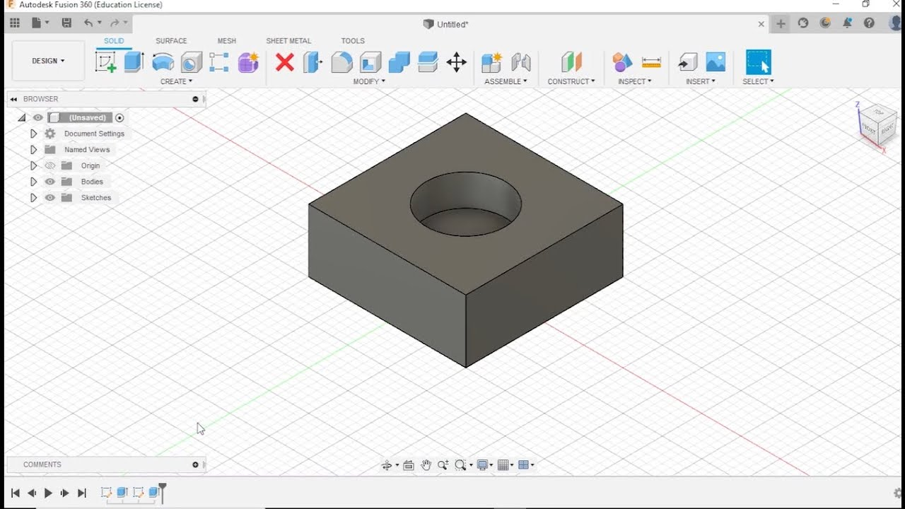

Capítulo 5 Desenho 3D
5.1 Teoria
Desenho 3D compreende desenhos feitos em software CAD (Computer-Aided Design) para descrever objetos tridimensionais que podem ser impressos com manufatura aditiva ou fabricados com usinagem (manufatura subtrativa).
Tal como no desenho 2D, no desenho 3D temos descrições vetoriais e bitmap.
A descrição vetorial é, da mesma forma que o 2D, um arquivo de código contendo informações sobre a geometria 3D do objeto. No entanto, a descrição é bem mais complicada, pois as operações 3D são mais complexas do que aquelas feitas no plano, por exemplo, extrusão, corte, etc.
Arquivos bitmap 3D são menos comuns, mas tendem a se tornar menos raros à medida que a tecnologia de escaneamento 3D baratear. A menor unidade de informação de um sólido bitmap é chamada de voxel (ao invés de pixel).
Na prática, o desenho 3D começa com a escolha de um software CAD adequado às necessidades do projeto. Solidworks, FreeCad e Autodesk Fusion são algumas das opções mais populares e cada um oferece um conjunto específico de ferramentas e funcionalidades para a criação de modelos 3D.
Solidworks é amplamente utilizado na indústria devido à sua interface intuitiva e poderosas capacidades de modelagem. Ele suporta uma vasta gama de operações 3D, desde simples extrusões até complexas montagens de múltiplos componentes. Além disso, o Solidworks possui ferramentas avançadas para simulação e análise, permitindo aos engenheiros validar seus projetos antes da fabricação.
FreeCad é uma opção open-source que oferece flexibilidade e uma ampla gama de módulos para diferentes tipos de projetos. Embora possa ter uma curva de aprendizado mais acentuada, é uma excelente escolha para quem busca uma alternativa gratuita e altamente personalizável para desenho 3D.
Autodesk Fusion 360 combina funcionalidades robustas de CAD com capacidades de CAM (Computer-Aided Manufacturing) e CAE (Computer-Aided Engineering) em uma única plataforma baseada na nuvem. Isso facilita a colaboração em equipe e o acesso aos projetos a partir de qualquer lugar. Fusion 360 é especialmente popular entre designers e engenheiros que trabalham em startups e pequenas empresas devido ao seu modelo de licenciamento acessível e integração com outras ferramentas da Autodesk.
A criação de um modelo 3D geralmente começa com esboços bidimensionais, que são então transformados em formas tridimensionais através de operações como extrusão, revolução, varredura e lofting. Essas operações permitem construir formas complexas a partir de perfis simples. Além disso, o software CAD oferece ferramentas para aplicar fillet (arredondamento), chamfer (chanfro) e outras modificações geométricas para refinar o modelo.
Após a modelagem, o arquivo 3D pode ser exportado em formatos compatíveis com impressoras 3D ou máquinas de usinagem CNC, como STL, OBJ ou STEP. Para manufatura aditiva, o modelo é fatiado em camadas finas que a impressora 3D constrói uma a uma. Para manufatura subtrativa, o software CAM gera o código G necessário para que a máquina CNC execute as operações de corte e fresagem.
A prática do desenho 3D não só envolve habilidades técnicas de uso do software, mas também um entendimento profundo dos princípios de engenharia e design, garantindo que os modelos criados sejam funcionais, fabricáveis e atendam às especificações do projeto.
5.2 Prática
Foi desenhado uma peça quadrada com um furo no meio no Fusion 360, que foi realizado seguindo os seguintes passos.
Comece abrindo o software e criando um novo projeto, salvando-o com um nome adequado para facilitar a organização. Em seguida, clique no ícone de “Create Sketch” na barra de ferramentas e escolha o plano onde deseja criar o esboço, como o plano XY. Selecione a ferramenta “Rectangle” (Retângulo) no menu de esboço, clique em um ponto no plano para definir o primeiro vértice do quadrado e arraste o mouse para definir a segunda esquina, inserindo as dimensões de 50mm x 50mm para criar um quadrado perfeito.
Após desenhar o quadrado, use a ferramenta “Dimension” para garantir que os lados do quadrado tenham exatamente 50mm, ajustando as dimensões conforme necessário. Em seguida, selecione a ferramenta “Circle” (Círculo) no menu de esboço e clique no centro do quadrado para desenhar um círculo. Defina o diâmetro do círculo, por exemplo, 20mm, inserindo o valor nas dimensões exibidas ao lado do círculo.
Depois de definir as dimensões do círculo, finalize o esboço clicando no botão “Finish Sketch”. Para extrudar o quadrado e transformá-lo em um objeto 3D, selecione a ferramenta “Extrude” no menu de modelagem, clique na área do quadrado e insira a altura desejada, como 10mm. Certifique-se de que o círculo no centro não seja extrudado, deixando o furo conforme o planejado.
Revise o modelo 3D para garantir que todas as dimensões e características estejam corretas. Se necessário, faça ajustes utilizando as ferramentas de edição disponíveis no Fusion 360. Após confirmar que o modelo está correto, salve o projeto e exporte o arquivo no formato desejado, como STL ou STEP, para uso em impressão 3D ou usinagem CNC.
